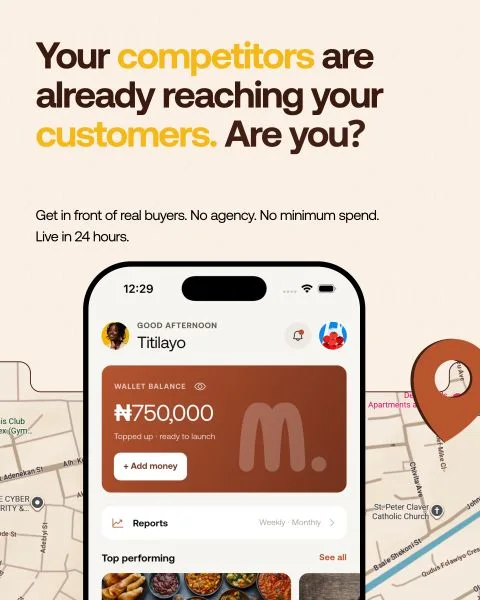

← All work
Case study 03 · Mimuads · Two-sided marketplace
Screen ads a small business can actually buy
Building a marketplace that pays venue owners for their screens and lets small businesses advertise on them from their phones, with views verified on the device.
In 30 seconds
The problem
Out-of-home advertising charges for estimates and is gated by agencies and big minimum spends, while venue screens sit idle.
What I did
Co-founded Mimuads and work on product: what we build, for whom, in what order.
Where it is
A live app, a self-serve dashboard and on-device view counting in Lagos, with an API for agencies in early access.
01
Context
A small business can run an online ad in minutes. Getting onto the screen in the shop next door is another story.
Traditional out-of-home advertising charges for estimates and projections, and it runs through agency middlemen, long lead times and heavy minimum spends. That shuts out the small businesses who would benefit most from local attention.
On the other side, pharmacies, eateries and salons sit on idle wall screens that burn electricity for zero return. Mimuads replaces the guesswork with verified, physical accountability: brands pay only for confirmed human attention, and venues turn idle screens into recurring revenue.
02
Who it's for
Two customers who want completely different things from the same screen.
Hosts and advertisers have different incentives, different objections and different vocabulary. Treating them as one market would have meant building for neither.
Explore · Two sides, two products
A marketplace only works if both sides want to be there. Switch sides to see what each one needs.
Venue hosts
What they need
- Income from a screen without effort
- No upfront cost and nothing to maintain
- To be paid reliably
What Mimuads gives them
- Hardware that installs in minutes at no cost, with maintenance handled
- A screen that keeps running through network drops
- The bigger share of the revenue, paid out every Friday
Our research with hosts looked at screen availability, foot traffic and what they expected to earn.
Advertisers
What they need
- To book without an agency or a big minimum spend
- To know the ad was actually seen
- To be live quickly
What Mimuads gives them
- A mobile app for small businesses and a dashboard for growth teams, with no retainers or minimum spend
- Payment only for confirmed human attention, verified by on-device computer vision
- Ads live on retail screens within 24 hours
Every ad is checked for APCON compliance before it goes live, which protects hosts and the marketplace as well as the advertiser.
03
Decisions and trade-offs
In a two-sided marketplace the temptation is to build for whichever side is easiest to reach.
Prove supply before building the engine
- What I chose
- Sign real venue hosts before building the full booking platform, so early decisions were tested against real screens, foot traffic and pricing expectations.
- Instead of
- Building the self-serve platform first and recruiting hosts afterwards.
- What it cost
- Slower to a polished product while the groundwork happened in person.
Two research tracks, not one survey
- What I chose
- A separate research instrument for hosts and for advertisers.
- Instead of
- One combined survey for both sides.
- What it cost
- Twice the research to run and make sense of.
Make hosting an easy yes
- What I chose
- Hosts get the bigger share of revenue, with the screen installed at no cost and maintenance handled.
- What it cost
- Thinner margins for Mimuads on every slot.
04
Trust and verification
Advertisers pay for verified views, and no images ever leave the screen.
Each screen runs on-device computer vision that counts viewers anonymously, and camera data stays on the device. That's how Mimuads can charge for confirmed human attention instead of estimates without collecting footage of people. Every creative is also checked for APCON compliance before it goes live.
Reliability is part of trust too. The player keeps running through network drops, so an advertiser's slot doesn't disappear when a venue's internet does.
Why it mattersVerification makes a self-serve marketplace trustworthy for advertisers, privacy makes it acceptable to hosts and passers-by, and uptime makes both sides' money real.

05
What's live
Live, early access and roadmap, labelled honestly.
- Mimuads app for small business ownersiOS and AndroidLive
- Self-serve campaign dashboardads.usemimu.com, for growth and media teams running multi-location campaignsLive
- Mimuads Player for host screensOn-device, anonymous view counting; keeps running through network dropsLive
- APCON compliance check on every adLive
- Supply-side APIFor agencies and ad platforms to buy screens programmaticallyEarly access
- White-label licensingPlayer software, targeting and verificationRoadmap
Source: usemimu.com